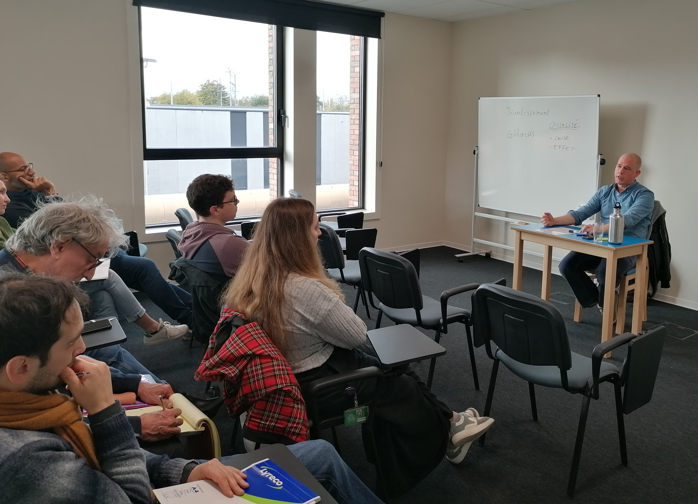

Préambule à l’exposé (Benjamin Thiry)
Cher(e)s collègues.
Bonjour à tous et bienvenue à la deuxième saison du séminaire de psychiatrie légale de la prison de Haren. Si vous vous souvenez bien, l’année passée, nous avons retracé une histoire de la justice, du système carcéral, de l’expertise psychiatrique, du service d’anthropologie pénitentiaire pour contextualiser le travail des services médico-psychosociaux qui travaillent actuellement en prison. Nous avons pu évoquer le thème du secret professionnel et la loi sur l’internement de 2014. Notre intention à Johan Kalonji et à moi était de sortir de l’instantanéité et de l’urgence continuelle de la prison pour réinstaurer une temporalité plus longue. La prison peut parfois fonctionner comme un trou noir, qui absorbe le temps, la parole et dès lors la pensée. Défendre celle-ci est une quête de chaque instant. Car quand la pensée disparaît, elle ne peut plus penser sa propre disparition par elle-même. Cette défense de la pensée, selon nous, va de pair avec la défense du sens : le sens des actions mais aussi celui des paroles. Vous le savez aussi bien que moi, la criminologie clinique – dont nous sommes des acteurs – est traversée ou parfois tiraillée par différents modèles théoriques. De manière schématique, nous pourrions notamment en dégager deux :
- un paradigme appelé positiviste qui tente d’objectiver les phénomènes, de les identifier, de les mesurer afin de les contrôler. Ce paradigme convoque un vocabulaire scientifique à visée descriptive afin de retrouver une maîtrise là où d’aucuns craignent de l’avoir perdue.
- Un second paradigme se revendique d’un courant philosophique qui conteste l’intention objectivante du premier. « Qui nous sommes » peut-il être décrit par des scores ou des mesures ? Selon ce paradigme, la réponse à cette question est plutôt – voire radicalement – négative. Mais comment alors appréhender ce qui fonde un être humain ? Il existe plusieurs réponses à cette question.
Cette année, Johan et moi avons décidé d’en développer une : l’approche narrative. L’hypothèse de cette approche est qu’homo sapiens, notre race, aime les histoires : depuis qu’il parle, il écoute et raconte des histoires qui sont le socle de la civilisation dont il se revendique et qui déterminent les interactions sociales et donc l’identité de chaque membre d’une collectivité. Pour dire qui nous sommes, il faut raconter des histoires : aux autres mais aussi – et peut-être surtout – à soi-même. Pas d’identité sans histoires.
Mais quelle utilité de ces histoires en criminologie clinique ? Pour certains aucune : afin de diminuer la charge de travail des intervenants de terrain certains ont eu l’idée de supprimer le chapitre intitulé « anamnèse », c’est-à-dire l’histoire de vie de la personne afin de se concentrer sur les « facteurs de risques » prétendument validés scientifiquement. Pour d’autres, elle est tout bonnement indispensable. Pour le Dr Max Vandenbroucke, dernier psychiatre chef de service du SPS, pour comprendre le délinquant, il ne fallait pas lire les textes des psychiatres ou des psychologues mais plutôt ceux des romanciers. Les romans permettent de saisir un « quelque chose » qui échappe aux plus grands spécialistes de la santé mentale. Mais qu’est-ce qu’une histoire ? Qu’est-ce qu’une bonne histoire ? Qu’est-ce qu’une mauvaise histoire ? Pourquoi certaines nous ennuient ou nous agacent ? Pourquoi certaines nous passionnent ?
Pour tenter de répondre à ces questions, nous accueillerons plusieurs invités remarquables cette année. Pour ouvrir le bal, nous avons la chance d’accueillir aujourd’hui Alexis Van Stratum qui a quitté Paris quelques heures pour être avec nous aujourd’hui. Alexis est un artiste au sens noble et complet du terme, qui crée inlassablement et navigue sur des mers houleuses afin d’en dégager des œuvres novatrices et audacieuses. Il est acteur, metteur en scène, réalisateur, formateur, écrivain, chanteur à ses heures et intellectuel à toutes. Alexis, accepterais-tu que nous disions que la récit fait partie de ta vie ? Lorsque j’ai proposé à Alexis de venir nous parler à la prison, il fut d’abord surpris, hésitant puis j’ai vu une lumière s’allumer dans son regard, comme une lumière de défi. Il a dit oui ! Quel plaisir de t’accueillir aujourd’hui pour t’entendre parler de la place des histoires dans nos vie. Je te cède aussitôt la parole.
Introduction
La question se pose de savoir comment construire des histoires qui ont du sens. Lorsqu’on parvient à nommer le problème, on détient déjà une part de la solution.
Depuis toujours, l’être humain a eu besoin d’histoires. Dans la Grèce antique, il cherchait à comprendre l’origine du monde : pour cela, il inventait des mythes, des récits ou des fables. Ces récits étaient d’abord transmis oralement avant d’être ultérieurement mis par écrit. Au XVIIème siècle, les contes furent écrits pour plaire aux enfants, inspirant plus tard les histoires populaires de Disney.
Dans son livre initulé La psychanalyse des contes de fées, Bettelheim (1976) souligne que chaque enfant a un conte préféré qu’il veut revoir sans cesse. Ce conte aborde souvent une peur ou un conflit intérieur, et le fait de le revivre l’aide à apprivoiser ses angoisses. Le dénouement heureux du récit procure alors un sentiment de sécurité.
Les Grecs ont ensuite distingué le simple divertissement — qui permet d’oublier ses soucis — de la catharsis, qui consiste au contraire à se confronter à la violence du monde pour s’en purifier. Les comédies servaient de divertissement et les tragédies de catharsis.
Ce concept fait encore débat : se confronter à la violence permet-il de la diminuer ou, au contraire, de l’attiser ? La question reste vive, notamment à propos des jeux vidéo. Aujourd’hui encore, de nombreux films ont pour but de dénoncer les dysfonctionnements de la société ; c’est particulièrement visible dans le cinéma belge, avec les frères Dardenne par exemple.
Le lien de causalité
Toute histoire repose sur une suite d’événements reliés entre eux : une cause entraîne un effet. Le cerveau humain cherche naturellement à établir des liens et à donner du sens à ce qui, dans la vie réelle, peut sembler aléatoire ou absurde. Raconter une anecdote, c’est déjà trier, sélectionner et organiser les faits pour leur donner une cohérence.
Face à un événement incompréhensible — accident, maladie, violence —, nous tentons de rétablir du sens et du contrôle. Dans un film, le hasard intervient rarement : hormis une rencontre fortuite en début d’histoire, tout est construit. Le spectateur n’accepte pas qu’une résolution vienne du hasard ; il veut voir le héros agir et trouver une issue. L’enjeu de l’écriture est donc de créer une logique crédible, cohérente et vraisemblable, sans tomber dans la prévisibilité.
Le vrai et le vraisemblable
Le vrai renvoie à la réalité des faits ; le vraisemblable désigne ce à quoi le spectateur peut croire. Un film inspiré d’une histoire vraie peut paraître invraisemblable s’il ne respecte pas les attentes de cohérence du public. L’exemple d’un vol au Louvre, trop extravagant, illustre bien cette tension.
Partir d’un fait réel n’est donc jamais simple. Il faut réinventer, trahir parfois la réalité, et organiser les faits autour d’une thématique centrale. Si un personnage a dix-sept amis, il peut être nécessaire d’en fusionner plusieurs pour clarifier le récit. La fiction le permet.
Dans un rapport factuel, la fidélité aux faits prime, mais la neutralité absolue reste illusoire : l’ordre des événements, leur mise en valeur, leur omission ou leur ton influencent toujours la perception.
Le point de vue
Le point de vue ne désigne pas une opinion, mais la place depuis laquelle on observe les faits — en cinéma, c’est souvent la position de la caméra. Une même histoire change radicalement selon la perspective adoptée : celle du père, de la mère, de l’enfant ou d’un narrateur externe. C’est le point de vue qui détermine le ressenti du spectateur. En changeant d’angle, un film peut même troubler des certitudes morales.
La progression
Une histoire doit avancer. Sans évolution, le spectateur s’ennuie. Le récit est un voyage entre un point A et un point B, ponctué d’obstacles, de choix et de revirements. Dans les récits initiatiques, cette progression conduit le personnage à se transformer. Voir un héros évoluer procure au spectateur courage, identification et désir de changement.
Le conflit
Le conflit est le moteur du récit. « Les gens heureux n’ont pas d’histoire ». Ce qui captive, c’est la lutte, les obstacles, les tensions. Le conflit ne se réduit pas à une dispute : il naît d’un enjeu, d’un risque de perte. Les producteurs demandent souvent de “monter les curseurs” : rendre la situation plus tendue, le danger plus grand, comme dans Squid Game. Le conflit peut être réel ou seulement latent ; la menace suffit à créer l’intérêt dramatique.
Le protagoniste
L’histoire s’articule en général autour d’un seul protagoniste, parfois d’un groupe, porteur d’un objectif principal et de sous-objectifs. Aristote parlait des trois unités : temps, lieu et action. L’unité d’action impose une intrigue centrale, éventuellement accompagnée d’une intrigue secondaire — une romance dans un thriller, par exemple —, sans que celle-ci ne domine la première.
Les conflits naissent de l’écart entre objectif et obstacles. Ceux-ci peuvent être internes (peurs, faiblesses, doutes) ou externes (antagoniste, société, nature). Les obstacles s’intensifient jusqu’au climax, point culminant du récit. Truby (2018) distingue ainsi le want (désir conscient) du need (besoin inconscient).
Chaque personnage secondaire doit avoir une fonction claire et refléter une facette de la thématique centrale, tout en restant authentique. Beaucoup incarnent des archétypes : mère, héros, enfant, mentor, etc.
La structure
Aristote proposait une structure en trois actes :
- Exposition : présentation du quotidien et incident déclencheur.
- Confrontation : obstacles, actions, pivots dramatiques.
- Résolution : climax puis dénouement.
La gestion de l’information
L’ordre dans lequel les informations sont révélées modifie profondément la perception du récit. Il faut doser la frustration du spectateur : trop tôt, l’effet tombe ; trop tard, il se perd.
Trois grands procédés existent :
- Ironie dramatique : le spectateur sait ce qu’un personnage ignore (ex. : la bombe sous la table).
- Surprise : spectateur et personnage découvrent en même temps.
- Mystère : le personnage cache un secret que le spectateur ignore.
Le set-up consiste à introduire un élément apparemment anodin qui prendra sens plus tard (pay-off). Cette technique crée une satisfaction narrative quand tout se relie.
La construction
Écrire une histoire, c’est assembler un puzzle. Le point de départ peut être un fait réel, un lieu, une idée ou une émotion. Le travail consiste surtout à agencer les éléments pour produire un ensemble cohérent. Il faut accepter qu’on ne plaira pas à tout le monde et qu’il est impossible de répondre à toutes les critiques. Il arrive parfois qu’un auteur ne découvre sa vraie intention que pendant le processus d’écriture.
Les références
Citation
@online{van_stratum2025,
author = {van Stratum, Alexis and Thiry, Benjamin and Louis, Lina},
title = {C’est quoi une histoire\,? Construction d’un récit dans les
films et les séries},
date = {2025-10-30},
url = {https://benjaminthiry.netlify.app/posts/2025-10-30-cinema/},
langid = {fr}
}